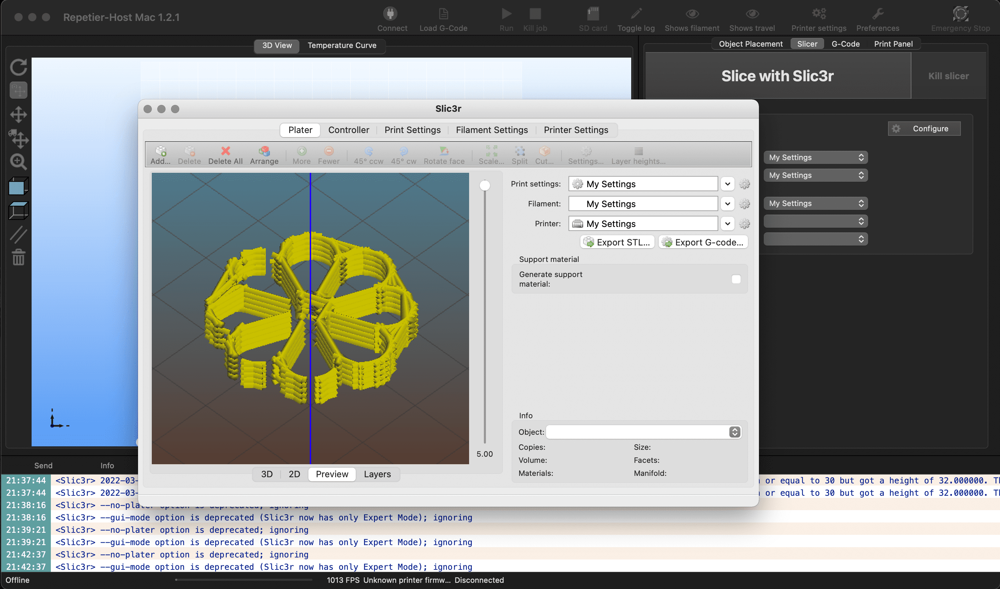
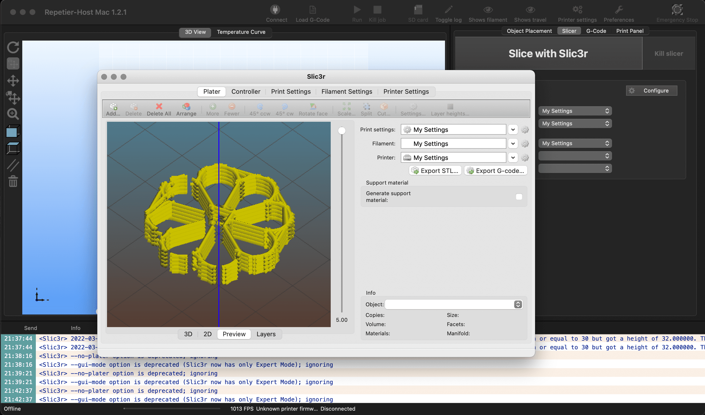
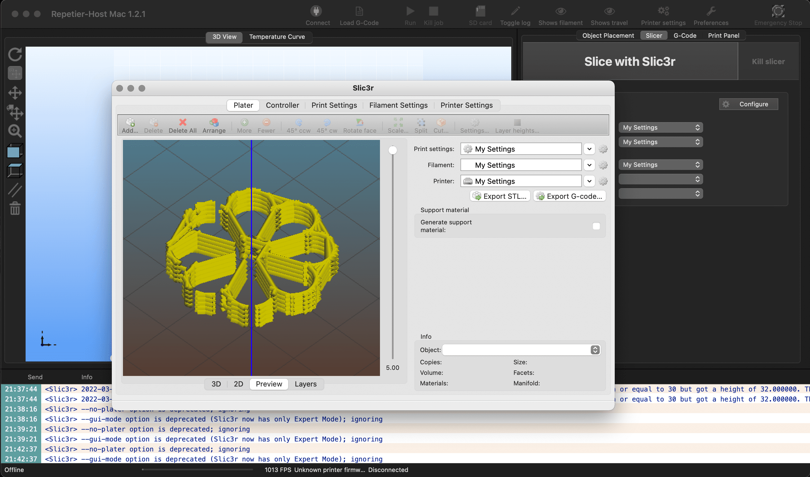

Photograph clicked at the Design Dialogues II, IaaC
WEEK XII
Wildcard week
Amidst the twelfth week, the interests lay in exploring Meta-materials and how forms of different kinds of food/physical media could influence the experience of eating, gastronomically and sensually. The aim was to use traditional knowledge, practices and food to intertwine with modern food/fabrication techniques for bettering production, spillage, taste and package.
The inspiration was derived from the various array of geometries involved in the traditional Indian Snacks. For the experiment, the snack that is selected is named 'Achappam' and is traditionally made using a heated cast, rice-flour batter and Mustard oil. The initial parts of the process involved replication of the traditional geometry into Rhino and then simplifying it.
These forms were converted into paths using a Grasshopper script for the 3D Paste printer. The same was simulated on the desktop using a Slic3r Repetier Host to cross-check the resolution and speed of the print alongside other variables. You can find some parts from the visualisations below.

Various tests using a syringe and 3mm nozzle were made to ensure the material flowed properly through the paste printing valve. The mixture involved components of different granular mass, so it had to be sieved and ground properly. After increasing the concentration of the paste for up to 7 times, it could hold certain structure. After perfecting the G code, the samples were refrigerated and cooked freshly for the Design Dialogues II event.


 
